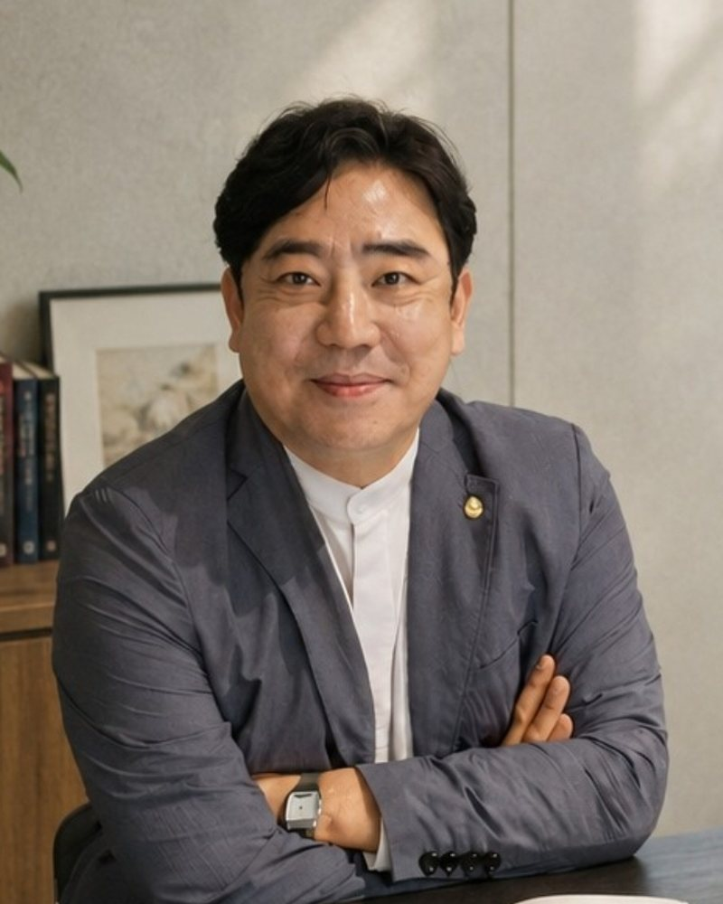

KEYNOTE · 대표
박재용 목사 GV청소년선교회 대표
글로벌비전교회 담임 · (사)GV청소년문화교육원 대표
백석대학교 기독교전문대학원 실천신학 박사(Th.D.)
청소년 사역의 위기는 프로그램 부족의 문제가 아니라 관계의 단절에서 시작됩니다.
제46차 · 겨울 바이블컨퍼런스
말씀으로 발견하는 정체성, 삶으로 이어지는 믿음. 2027년 겨울, 가평 승동기도원에서 청소년과 지도자가 같은 자리에 서는 2박 3일이 열립니다. 전문강사 7인의 말씀 집회와 지도자세미나, 팀미션, 사역자 결의식, CELEBRATE가 이어집니다.
GALATIANS 2:20 내가 그리스도와 함께 십자가에 못 박혔나니 그런즉 이제는 내가 사는 것이 아니요 오직 내 안에 그리스도께서 사시는 것이라

포스터를 누르면 원본으로 볼 수 있습니다
46회
1998년부터 이어온 겨울 말씀 수련회
2박 3일
2027. 1. 14(목) – 16(토) · 승동기도원
7인
전문강사 · 마지막 밤 A-MEN 특별 무대
90,000원
2박 3일 숙식 포함 참가 회비
01About the conference
우리는 무엇을 가졌는지로 자신을 설명하는 시대에 살고 있습니다. 그러나 바울은 자기 삶을 설명하는 기준을 통째로 바꿉니다. “이제는 내가 사는 것이 아니요 오직 내 안에 그리스도께서 사시는 것이라.” 정체성은 성취가 아니라 누가 내 안에 사시는가로 정해집니다.
그래서 이번 컨퍼런스는 강의를 듣는 자리가 아니라 함께 서는 자리입니다. 말씀 집회에서 듣고, 지도자세미나에서 세워지고, 팀미션에서 함께 부대끼고, 사역자 결의식에서 결단하고, CELEBRATE에서 함께 기뻐합니다.
교회와 학교, 단체가 달라도 한 자리에 모여 같은 말씀을 붙들 때 다음 세대는 다시 일어섭니다. 2박 3일 동안 청소년과 지도자가 같은 식탁에 앉아 같은 말씀을 나눕니다.
주제 말씀 · GALATIANS 2:20
내가 그리스도와 함께 십자가에 못 박혔나니 그런즉 이제는 내가 사는 것이 아니요 오직 내 안에 그리스도께서 사시는 것이라
제46차 청소년 바이블컨퍼런스 · THE CHRISTIAN
02Program
포스터에 표기된 다섯 프로그램입니다. 듣고 — 세워지고 — 함께하고 — 결단하고 — 기뻐하는 순서로 이어집니다. 세부 시간표는 확정되는 대로 이 페이지에 올립니다.
지도자세미나
Leaders Seminar
교사와 지도자가 먼저 말씀 앞에 서는 시간입니다. 청소년을 세우는 사람으로 서 있기 위한 훈련과 나눔이 컨퍼런스 내내 이어집니다. 지도자 트랙
말씀 집회
Bible Session
주제 말씀 갈라디아서 2:20을 따라 아침과 저녁으로 말씀을 듣습니다. 전문강사 7인이 나누어 전하는 말씀으로 이 시대 다음 세대의 정체성을 다시 세웁니다.
팀미션
Team Mission
조별로 주어진 미션을 함께 풀어갑니다. 서로 다른 교회에서 온 참가자가 한 조가 되어 협력하고, 경쟁보다 동역을 배우는 시간입니다. 바이블 열전 · 성경 게임
사역자 결의식
Commitment
받은 은혜를 가지고 세상으로 나가겠다는 결단의 자리입니다. 교역자와 지도자가 참가자 한 사람 한 사람과 만나 기도하며 함께 결단합니다. 사명자 뱃지 수여
CELEBRATE
Worship & Praise
마지막 밤, 함께 찬양하고 기뻐합니다. 3인조 보컬 그룹 A-MEN의 특별 무대와 워십으로 컨퍼런스의 마지막을 채웁니다.
지난 컨퍼런스의 하루
2025년 제42차 바이블컨퍼런스 운영 기록DAY 1
들어옴 · 함께 섬
DAY 2
말씀 · 결단
DAY 3
확인 · 파송
* 프로그램과 일정은 진행 상황에 따라 변동될 수 있습니다. 제46차 시간표가 확정되면 이 자리에 올립니다.
03Faculty
설교와 상담, 청소년 사역의 자리에서 오래 일해 온 일곱 사람이 말씀을 나눕니다.
KEYNOTE · 대표
글로벌비전교회 담임 · (사)GV청소년문화교육원 대표
백석대학교 기독교전문대학원 실천신학 박사(Th.D.)
청소년 사역의 위기는 프로그램 부족의 문제가 아니라 관계의 단절에서 시작됩니다.
이우제 교수
백석대학교 설교학
Th.D.
서태근 목사
온세대교회 담임
실천신학 박사
안관숙 목사
꿈송이선교회 대표
실천신학 박사

정현진 목사
성지교회 담임
실천신학 박사 과정
황우성 목사
더건강한교회 담임
실천신학 박사
양재영 목사
목양제일교회 담임
실천신학 박사 과정
04Registration
청소년과 청소년 사역자·지도자가 함께 참가합니다. 교회 단위로 신청서를 보내 주세요.
개인 침구(이불·베개)와 세면도구, 성경, 필기구를 챙겨 주세요. 단체 준비물과 숙소 배정은 접수 후 안내합니다.
BANK TRANSFER
국민은행 866401-04-106794
예금주 GV청소년선교회 · 입금자명은 신청자 이름으로
05Application
신청서를 내려받아 작성한 뒤 이메일로 보내 주세요. 담당자 확인 후 접수 안내를 드립니다.
aichurchsystem@gmail.com
메일 제목 — [바이블컨퍼런스 참가신청] ○○교회 · 문의 02-429-1318
※ 브라우저 보안상 첨부 파일은 자동으로 붙지 않습니다. 작성한 신청서를 메일에 직접 첨부해 주세요.
※ 신청서 파일은 만들어 주시는 대로 이 자리에 올립니다. 파일이 올라오기 전에는 내려받기가 열려 있지 않습니다.
※ 이번 단계는 서류 접수(이메일)만 안내합니다. 온라인 등록 폼과 등록 교회 명단은 다음 단계에서 연결합니다.
06Location
경춘선 가평역에서 차로 약 15분, 서울에서 승용차로 1시간 30분 거리입니다.
승동기도원 약도실제 축척과 다릅니다 · 37.8283, 127.4759
서울양양고속도로 화도IC → 신경춘로(청평·상천) → 가평오거리 → 가평군청 앞 → 경반리 · 석봉로191번길 → 승동기도원. 내비게이션에 주소를 입력하세요.
경춘선 가평역 하차(용산·청량리에서 ITX-청춘 이용). 가평역에서 기도원까지 약 5km, 차로 약 15분입니다.
동서울터미널·상봉터미널에서 가평시외버스터미널행. 터미널에서 기도원까지 약 5km입니다.
ADDRESS
경기도 가평군 가평읍 경반안로 261
기도원 031-581-6007 · 주차 가능(기도원 자체 주차장) · 문의 02-429-1318
이 페이지 주소
aichurchsystem.github.io/Church/gv-youth/
bible-conference.html
·Next
GV청소년선교회는 겨울 바이블컨퍼런스와 여름 비전컨퍼런스를 해마다 열어 왔습니다.
제46차 청소년 바이블컨퍼런스 참가와 단체 접수, 강의·상담 문의를 전화와 이메일로 받습니다. 신청서 파일이 올라오기 전까지는 아래 두 곳으로 연락해 주세요.
문의 전화 02-429-1318 · 담당 전자옥 전도사 010-6491-3683 · aichurchsystem@gmail.com
제46차 청소년 바이블컨퍼런스 포스터 · GV청소년선교회